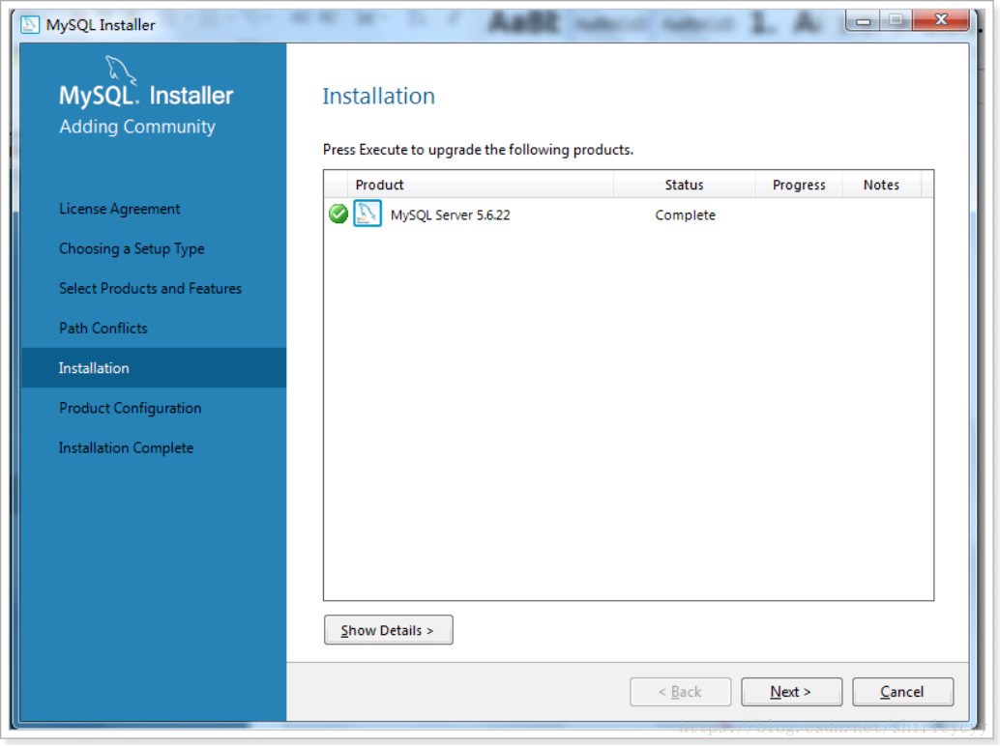
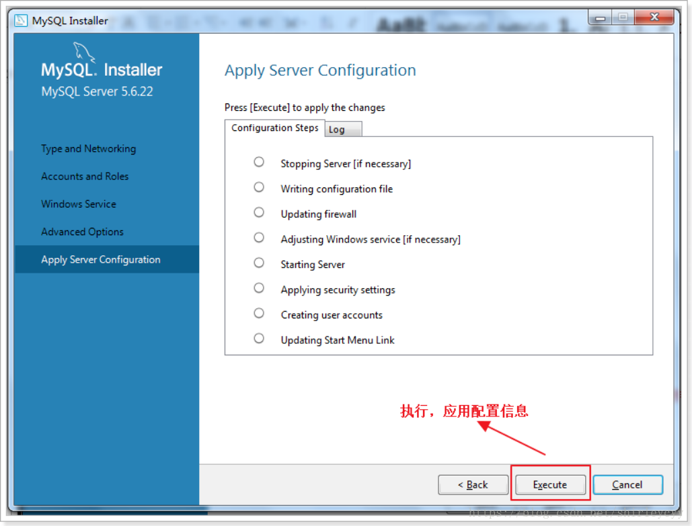
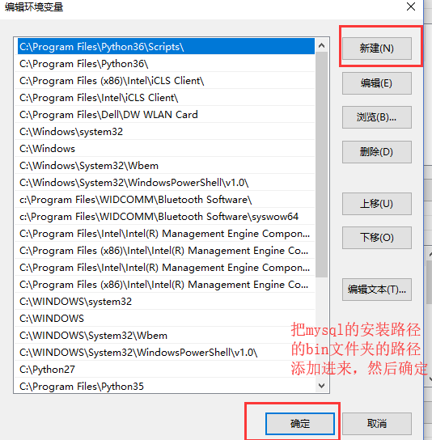
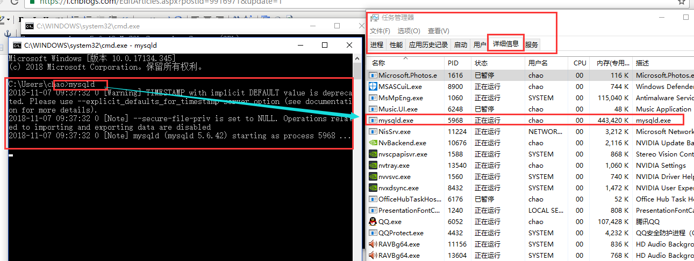

原文连接:https://www.cnblogs.com/liwenhu/p/11431886.html
我分了两种下载安装的方式给大家看，注意数据库这个东西不在乎版本是不是最新，在乎的是够稳定，现在公司中常用的是mysql5.5和mysql5.6的版本，我现在就用mysql5.6的版本给大家来演示一下：
第一种下载安装的方法：
mysql下载地址：https://dev.mysql.com/downloads ，如果你是在这里面下载的，看操作：
然后按照下面的方式选择：
如果你下载的是mysql的安装程序，也就是文件扩张名为.msi结尾的，那么你安装的时候就按照下面这种图文教程的方式安装。
这里选择自定义模式，因为我的电脑是64位，选择x64



至此，安装完毕。来添加路径C:\Program Files\MySQL\MySQL Server 5.7\bin到环境变量中的系统变量“Path”
右键点击我的电脑-->点击属性

最后，打开cmd，输入mysql -u root -p，并回车，如果出现Welcome字样，说明mysql安装成功。
第二种下载安装的方法：
mysql下载地址：https://dev.mysql.com/downloads，如果你在mysql官网下载的是zip压缩包，看操作，注意和上面第一种方法的下载网址不同：
然后按照下面的选择来下载，发现是zip压缩包对吧，zip压缩包解压之后就能用，上面的msi还需要安装一下，安装的时候可以选择很多的依赖环境一起安装：
点击download进来：
下载完成以后进行安装：
- 解压MySQL压缩包，将以下载的MySQL压缩包解压到自定义目录下。我放在D:\Program Files\MySQL
- 解压完成之后其实就可以用了，但是为了方便使用，也就是在cmd启动mysql的时候，就不用加上全路径了，所以添加一下环境变量，将bin这个文件夹添加到环境变量，bin这个文件夹中有mysqld服务端，有mysql自带的一个客户端，所以添加了环境变量之后，在cmd中直接就可以使用了。
这样就将我们的mysql服务端（mysqld）和mysql自带的一个客户端（供用户在本机测试用的，也是cmd窗口下使用的，客户端叫做mysql，后面操作的时候会使用到）
然后我们直接在cmd窗口就可以启动mysql服务端了，并且可以在任务管理起里面查看。

然后我们再启动一个cmd窗口来使用一下mysql客户端，然后连接一下我们开启的服务端，就可以成功了。
连接指令是：mysql -h 服务端IP地址 -P(大写) 3306(mysql服务端默认端口) -uroot（用户，这里我使用root用户来测了） -p密码 。注意：如果这样直接输入密码的话，密码和前面的-p中间不要有空格。
我自己在本机进行测试的，所以我写的mysql服务端的IP地址为我本机的回环地址127.0.0.1，其实如果是自己测试本机的mysql服务端，我们可以不用写ip地址和端口的，直接写mysql -uroot -p，但是连接别的电脑的mysql的时候一定要写IP地址和端口，并且不能用root用户去远程连接别的电脑的mysql服务端，并且要注意mysql服务器上的防火墙是否允许3306能够被外人连接，如果想让别人连，要更改防火墙设置，让他允许3306端口被连接，或者直接关闭防火墙（不建议直接关闭，测试的时候可以用），否则会报错。
ip地址除了写127.0.0.1之外，还可以写localhost，或者自己本机的ip地址，但是写本机的ip地址的时候，服务端会将你的客户端视为外部设备，不允许你这样登陆。
自己本机测试连接的时候，完全可以不用写ip地址和端口
到目前为止，我们就已经可以连接并使用mysql数据库了，但是你发现，关闭mysql服务端比较麻烦，启动的时候我们直接输入的mysqld回车就启动了
关闭的方式有两种：
1.通过任务管理器来关闭服务端：
2.通过cmd指令来关闭mysql服务端
所以我们可以通过系统服务的方式来控制mysql服务的开启或者关闭，那么就需要将mysql服务加入到系统服务中，来看一下怎么制作成系统服务：
打开cmd窗口，注意：必须以管理员身份打开cmd窗口，在左下角的地方找到这个圆圈，点击，然后输入cmd，匹配出来命令提示符，然后右键点击，以管理员身份打开
然后输入 mysqld --install 服务名（可以给这个服务一个名字，直接跟在这个指令的后面，不写也可以，会默认有一个，后面可以查看到）
这样就添加系统服务了
然后win键+r 打开运行窗口，里面输入services.msc来打开系统服务列表
就可以看到mysqld服务了，如果没有就点击上面的刷新按钮
选中MySQL服务这一项，我们就可以直接右键查看功能，功能里面有启动和关闭，就可以通过系统服务的形式来启动和关闭MySQL服务了，这个服务是默认开启的，我们也可以自行设置是否自动开机启动等等的行为，左键双击一下这个服务你就看到下面的窗口了。
添加了系统服务以后，我们在启动和关闭这个mysql服务，就可以在cmd窗口下使用两个指令就搞定了：
启动指令：net start mysql
关闭指令：net stop mysql
并且不能再使用 mysqld指令直接启动了。
还可以通过指令来移除刚才添加的系统服务：
cmd下移除服务命令为：mysqld remove